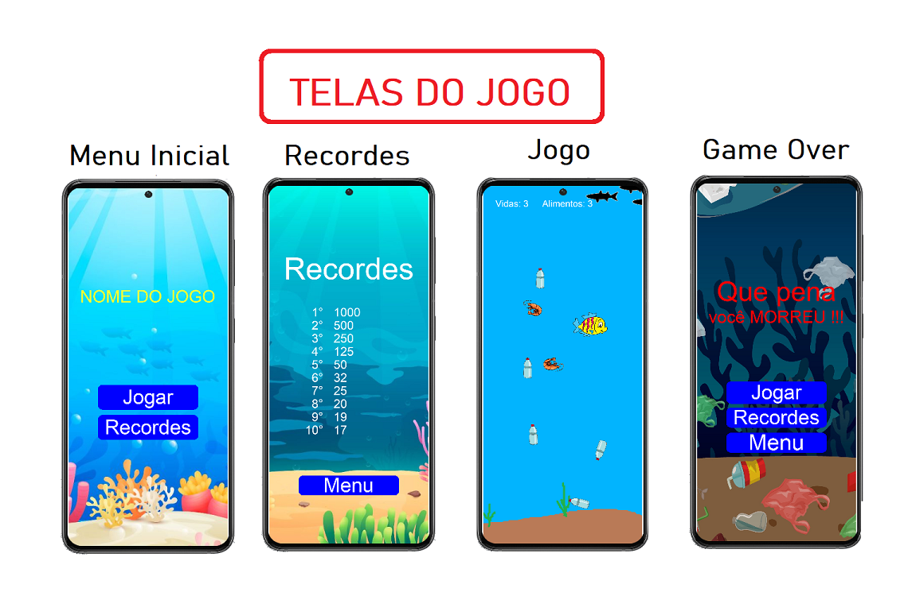

Seguem alguns projetos LUA:
- StarExplorer (jogo completo versão 2.0)
- Áudios
- Câmera Virtual
- Colisões
- Balão
- Elvira Game
- Física
- Juntas Físicas
- Formas geométricas
- Formas geométricas com cores
- Movimenta Player
- Funções aritméticas
- Sprites
- Funções eventos
- Transições
- Colisões
- Sprites
- Particulas
- Peixinho (jogo completo versão 1.0)
- TODOS OS PROJETOS LUA
Jogo Cooperfish
Este Jogo em 2D foi desenvolvido como projeto final para o curso de Programação LUA CPDI - COOPERFORTE para atender a ODS 14 (Vida debaixo d'água)
